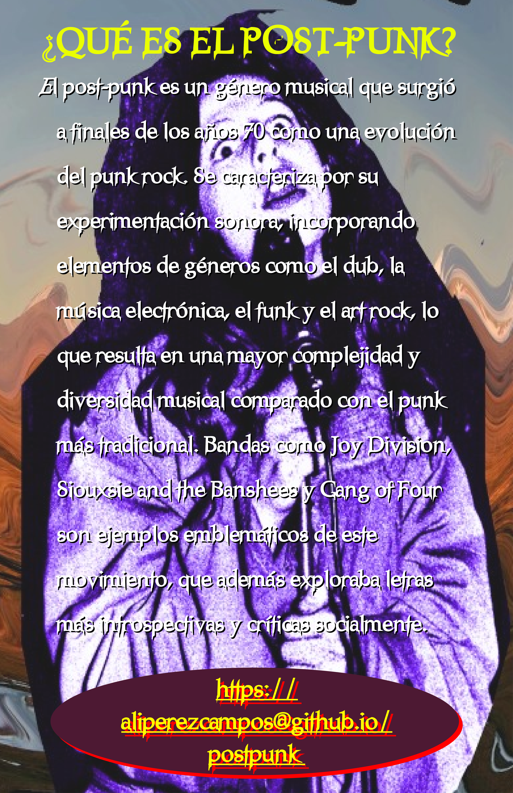

Bienvenido Cultura Post-Punk
Explora el oscuro y fascinante mundo del post-punk, donde la música, la literatura y el arte se combinan para crear una experiencia única.
-
👉 DATOS DEL POST-PUNK: 👇
Música
Literatura
Arte
Vestimenta Post-Punk
La vestimenta post-punk es una expresión de individualidad y rebeldía, combinando elementos oscuros, andróginos y alternativos.
Galería de imágenes


×

Contacto
Para más información, no dudes en contactar: